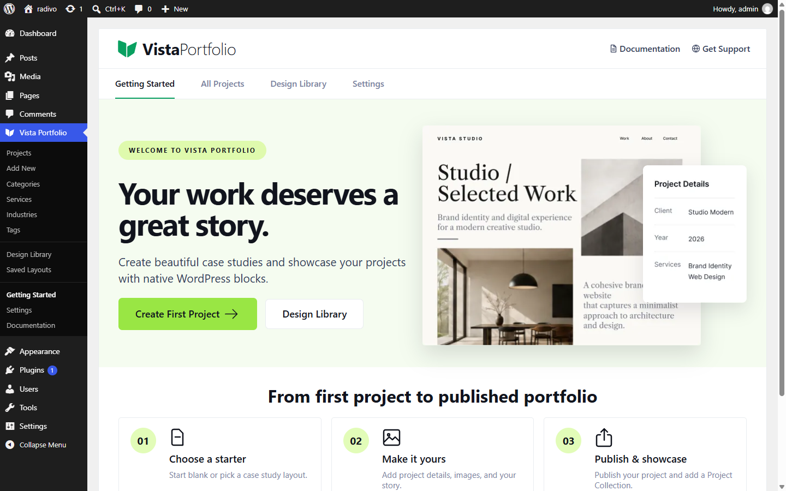
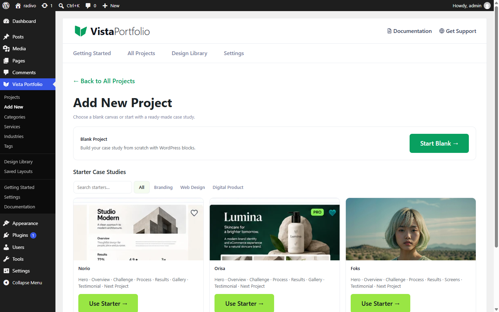

Quick Start
Use this path to go from a fresh install to a public portfolio page.
On this page
- Open Getting Started
- Create a project
- Publish a portfolio page
1. Open Getting Started
In wp-admin, go to Vista Portfolio → Getting Started. The welcome screen introduces projects, the Design Library, and next steps.

2. Create a project
Choose Add New. You can start blank or pick a Free design from the Design Library (for example a complete case study such as Norio, Orisa, or Foks).


Fill Client, Year, Role, Duration, and Project URL in the project sidebar, set a featured image, then publish.
3. Show projects on a page
- Edit any page in the block editor.
- Insert Project Collection (and optionally Project Filter above it).
- Choose layout and card skin, then publish the page.

Next: Design Library, Project URLs & Archive, or Portfolio Page with Filter.